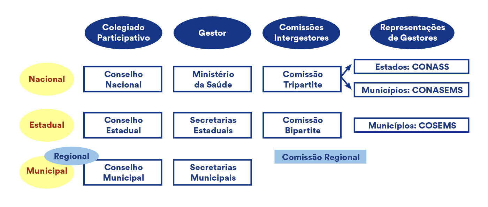

O Sistema Único de Saúde (SUS) conforma o modelo público de ações e serviços de saúde no Brasil.
Orientado por um conjunto de princípios e diretrizes válidos para todo o território nacional, nasce
de experiências prévias de reformas e de um intenso debate envolvendo a participação de entidades da
sociedade civil organizada. O marco desse processo foi a 8ª Conferência Nacional de Saúde, realizada
em 1986, em torno dos temas da saúde como direito de cidadania, da reformulação do sistema nacional
de saúde e do financiamento do setor, que alimentaram um intenso debate que culminaram na aprovação
da Constituição de 1988.
8ª Conferência Nacional de Saúde
A origem das conferências de Saúde precede a publicação da Lei Orgânica da Saúde em 1990.
Instituídas pela lei n. 378, de 13 de janeiro de 1937, elas tinham como principal objetivo
propiciar a articulação do governo federal com os governos estaduais, dotando-o de
informações para formulação de políticas, para a concessão de auxílios e subvenções
financeiras.
Desde que foram instituídas, as conferências sofreram profundas mudanças, mas
todas, com maior ou menor intensidade, interferiram nas políticas de saúde (Escorel & Bloch,
2005). Assim, a 8ª Conferência Nacional de Saúde é considerada um marco de transformação
desses fóruns, sendo fundamental para o processo da reforma do sistema de saúde brasileiro
desembocado na Constituição de 1988.
Convocada pelo presidente José Sarney, a 8ª Conferência
reuniu mais de quatro mil pessoas e contou, pela primeira vez, com ampla participação das
organizações da sociedade civil de todo o país como delegados eleitos, incluindo as
representações sindicais, das associações de profissionais de saúde, de movimentos populares
em saúde, do Centro Brasileiro de Estudos de Saúde (Cebes), da Associação Brasileira de
Pós-Graduação em Saúde Coletiva (Abrasco).
Os principais temas tratados desdobraram-se nas seguintes diretivas centrais, cujos
requisitos continuam válidos ainda hoje:
1) a busca da equidade;
2) a garantia de acesso universal às ações e aos serviços de saúde;
3) o aumento do financiamento público do setor saúde;
4) a unificação e a integração das ações, do ponto de vista de seu conteúdo -
preventivas, curativas e de reabilitação - e do ponto de vista de sua gestão, integração
entre os entes federados (federal, estadual e municipal) e unicidade das estruturas
gestoras em cada esfera de governo; e
5) a atribuição de maiores poderes à população para participar ativamente na formulação,
na implementação e no controle das ações de saúde.
Para saber mais sobre participação social na política de saúde, veja a aula Democracia,
representação e participação nas Políticas Públicas - o caso SUS, no Módulo 2 desse curso.
• Um direito constitucional
Mesmo com divergências em relação ao conteúdo de algumas das propostas (Baptista, 2014), durante o
processo constituinte foi possível instituir uma coalizão parlamentar capaz de introduzir no Título
VIII - Da Ordem Social, um Capítulo (II) específico sobre a seguridade social (Brasil, Constituição
Federal de 1988). O conteúdo ideológico desse capítulo demonstra a preocupação com o bem-estar, a
igualdade e a justiça na sociedade, realizados pelo exercício dos direitos sociais.
A Constituição Federal conceitua e estabelece os princípios da Seguridade
Social. Compete ao Poder
Público organizá-la em uma lógica universalista e equitativa, financiada por fontes diversificadas
de receitas de impostos e contribuições sociais, dos orçamentos da União, estados e municípios.
Nesse contexto, de tentativa de articulação e integração das políticas sociais, foram estabelecidos
os fundamentos que, pela primeira vez em nossa história, orientaram a inscrição da saúde como
direito de todos os cidadãos brasileiros e dever do Estado. Cabe destacar a concepção ampla da saúde
adotada na Constituição de 1988, garantida mediante “políticas sociais e econômicas abrangentes que
reduzam o risco de doenças e outros agravos e ao acesso universal e igualitário às ações e serviços
para sua promoção, proteção e recuperação” (Brasil, Constituição Federal de 1988).
Íntegra do discurso do presidente da Assembleia
Nacional Constituinte (1988):
No dia 5 de outubro de 1988, o presidente da Assembleia Nacional Constituinte, o deputado
Ulysses Guimarães, promulgou a atual Constituição Brasileira, conhecida como a 'Constituição
Cidadã'. Ouça a íntegra do discurso histórico.
atividades dirigidas às pessoas, individual ou coletivamente, voltadas para
a promoção da saúde e prevenção, diagnóstico, tratamento e reabilitação de agravos e
doenças;
serviços prestados no âmbito ambulatorial, hospitalar e nas unidades de
apoio diagnóstico e terapêutico geridos pelos governos (quer seja pelo governo federal,
estaduais ou municipais), bem como em outros espaços, especialmente no domiciliar;
ações de distintas complexidades e custos, que variam desde aplicação de
vacinas e consultas médicas nas clínicas básicas (clínica médica, pediatria e
ginecologia-obstetrícia) até cirurgias cardiovasculares e transplantes;
intervenções ambientais no seu sentido mais amplo, incluindo as condições
sanitárias nos ambientes da vida e de trabalho, e na produção e circulação de bens e
serviços, o controle de vetores e hospedeiros e a operação de sistemas de saneamento
ambiental;
instituições públicas voltadas para o controle da qualidade, pesquisa e
produção de insumos, medicamentos, sangue e hemoderivados e equipamentos para a saúde.
Explicita-se que, quando as suas disponibilidades forem insuficientes para garantir a cobertura
assistencial à população de uma determinada área, o SUS poderá recorrer aos serviços prestados pela
iniciativa privada. A participação complementar dos serviços privados deve ser realizada mediante o
estabelecimento de contratos e convênios, sendo observadas as normas de direito público, os
princípios éticos e a regulamentação expedida pelos órgãos de direção do SUS, quanto às condições
para seu funcionamento, controle e fiscalização.
O SUS, portanto, não é composto somente por serviços públicos, mas integra serviços privados (com ou
sem fins lucrativos), principalmente hospitais e unidades de diagnose e terapia, que são remunerados
a partir dos recursos públicos destinados à saúde. O financiamento oriundo de receitas arrecadadas
pelo Estado permite que as ações e serviços prestados no âmbito do SUS sejam oferecidos de forma
gratuita no momento do atendimento, sem que os usuários tenham que comprovar qualquer forma de
contribuição financeira prévia.
PARA IR MAIS LONGE:
Em que pese o caráter público do SUS, assegurado por seus princípios e pela origem
estatal dos recursos para seu financiamento, a saúde é livre à iniciativa privada no
Brasil. Isso permite a coexistência de vários segmentos de serviços, que
se distinguem por vias de acesso e fontes de financiamento (planos e seguros de saúde,
sistemas de “clientela fechada” e provedores privados autônomos), auferindo um caráter
plural ao nosso sistema de saúde. Tal característica também diferencia a experiência
brasileira de outros países que adotam modelos similares para organização de seus
sistemas públicos de saúde, onde a presença do segmento privado não é um aspecto tão
marcante.
Você vai aprofundar a discussão sobre as relações público- privadas no sistema de saúde
brasileiro na aula O público e o privado no sistema de saúde brasileiro, do Módulo 2 do
curso.
Os principais princípios e diretrizes do SUS
estabelecidos na Lei Orgânica da Saúde (Lei
8.080/1990), complementada pela Lei
n. 8.142/1990,
são:
Universalidade de acesso em todos os níveis de assistência
O acesso universal é a expressão de que todos têm o mesmo direito de obter as
ações e serviços de que necessitam, independentemente da complexidade, custo e
natureza dos serviços envolvidos. Ele implica na substituição do modelo
contributivo que vigorou por um longo período no Brasil e condicionava o acesso
dos contribuintes da Previdência Social - inicialmente compostos por
determinadas categorias profissionais e, posteriormente, pelos trabalhadores
inseridos formalmente no mercado de trabalho - aos serviços públicos e privados
credenciados ao sistema previdenciário. Com a universalidade, as condições
socioeconômicas da população não devem implicar em acesso diferenciado a
determinados tipos de serviços, pois os riscos de adoecimento e o financiamento
passam a ser repartidos de forma solidária, sendo de responsabilidade de toda a
sociedade.
Igualdade na assistência à saúde, sem preconceitos ou privilégios de qualquer
espécie
Esse princípio reitera que não pode existir discriminação no acesso aos serviços
de saúde, isto é, não é aceitável que somente alguns grupos por razões
relacionadas à renda, cor, gênero ou religião, tenham acesso a determinados
serviços e outros não. Somente razões relacionadas às necessidades diferenciadas
de saúde devem orientar o acesso ao SUS e a escolha das ações e tecnologias a
serem
empregadas no cuidado das pessoas, com base em uma lógica de igualdade social.
Integralidade da assistência
A integralidade é entendida, nos termos da Lei, como um conjunto articulado e
contínuo das ações e serviços preventivos e curativos, individuais e coletivos,
exigidos para cada caso em todos os níveis de complexidade do sistema. A ideia é
que as ações voltadas para a promoção da saúde e a prevenção de agravos e
doenças não sejam dissociadas da assistência ambulatorial e hospitalar voltadas
para o diagnóstico, o tratamento e a reabilitação. Por isso, os profissionais de
saúde e os gestores do SUS devem empenhar-se em organizar as práticas dos
serviços, de modo a permitir que essa integração ocorra. No âmbito mais geral da
política de saúde, a integralidade também remete à articulação necessária entre
as políticas de cunho econômico e social no sentido de atuar sobre os fatores
que influenciam o processo saúde e doença e garantir as condições adequadas
de saúde da população.
Participação da comunidade
A participação da comunidade é a garantia de que a população, por intermédio de suas
entidades representativas, possa participar do processo de formulação de diretrizes
e prioridades para a política de saúde, da fiscalização do cumprimento dos
dispositivos legais e normativos do SUS e do controle e avaliação das ações e
serviços de saúde executados nas diferentes esferas de governo. A materialização
desse princípio se expressa no âmbito do SUS pela realização das Conferências de
Saúde e pela constituição dos Conselhos de Saúde, que representam um canal
permanente de diálogo e interação entre os gestores, os profissionais de saúde e a
população.
Descentralização político-administrativa
A descentralização com comando único implica que os governos e os gestores do
SUS
estaduais e, particularmente, os municipais, tenham maior responsabilidade e
autonomia para decidir e implementar ações e serviços de saúde. Ela tem como
propósito promover a democratização do processo decisório e aumentar a
capacidade de resposta dos governos em relação aos problemas de saúde de uma
dada comunidade. No entanto, visto que os problemas de saúde não se
distribuem
uniformemente na população, no território e no tempo, e envolvem tecnologias
de
diferentes níveis de especialização, densidade tecnológica e custo, faz-se
necessário organizar a rede de serviços do SUS de modo que ela ofereça os
procedimentos necessários sem ociosidade. Para isso, é preciso definir o
perfil
das unidades por níveis de atenção (hierarquização) e distribuí-las
geograficamente (regionalização).
Em um nível mais básico estariam os serviços dotados de tecnologias e
profissionais para realizar os procedimentos mais frequentemente necessários
(ex.: vacinas, consultas com médicos generalistas, com médicos das
especialidades básicas e outros profissionais de saúde, parto normal). Esses
serviços deveriam se distribuir o mais amplamente possível em todo o
território
nacional. Em um nível mais especializado ou complexo, estariam situados os
hospitais, os ambulatórios e as unidades de diagnose e terapia capazes de
realizar aqueles procedimentos menos frequentemente necessários, para os
quais
não é aceitável ociosidade dado as implicações sobre os custos crescentes
sobre
o sistema e da qualidade da assistência prestada (ex.: cirurgia cardíaca,
ressonância nuclear magnética, transplantes de medula óssea).
A regionalização e a hierarquização requerem que os usuários sejam
encaminhados
para unidades mais complexas do sistema quando necessário e que possam
retornar
à sua unidade de origem (correspondente a um nível mais básico do sistema)
para
acompanhamento (mecanismo de referência e contrarreferência). Isso implica
em um
fluxo adequado de informações entre as unidades que compõem o sistema, sejam
elas hospitais ou postos de saúde, públicas ou privadas credenciadas ao SUS,
situadas em diferentes municípios ou estados. A articulação de diferentes
gestores para promover a integração da rede de serviços do SUS que
transcenda o
espaço político-administrativo de um município ou estado é uma questão
bastante
complexa e esbarra em uma série de dificuldades políticas e operacionais.
A articulação dos gestores do SUS voltará a ser abordada na aula
Descentralização, regionalização e
relações intergovernamentais na gestão
do
SUS, do Módulo 3.
PARA IR MAIS LONGE:
O que é, de onde veio e para onde vai o SUS
Fonte: Nexo
Em matéria especial, o jornal NEXO contou a história do SUS e construiu sua linha do
tempo,
até o início da pandemia de COVID-19. O conteúdo está em acesso aberto, no site do jornal.
Dada a abrangência das ações e serviços previstos no SUS, as determinações legais relativas ao
âmbito
de atuação do Estado na saúde são também bastante amplas. Além da organização e prestação da
atenção
à saúde, compete ao Poder Público: a execução de ações de vigilância sanitária, epidemiológica,
saúde do trabalhador; a ordenação de recursos humanos para a saúde; a fiscalização e produção de
insumos para a saúde; e a participação em outras políticas relevantes, como a de saneamento
básico,
fiscalização de produtos e proteção ao meio ambiente. Ressalte-se que várias responsabilidades
do
Estado na área da saúde implicam em parceria com outros setores de governo, como o
desenvolvimento
científico e tecnológico, a formação de recursos humanos, a provisão e regulação de insumos para
a
saúde, a política industrial, de urbanização, saneamento e educação, entre outros.
Os dispositivos acima mencionados têm as seguintes implicações para a inserção do SUS como uma
política de Estado:
a responsabilidade pela situação de saúde não é apenas setorial;
as políticas econômicas e sociais devem estar orientadas para a
eliminação
ou redução de riscos para a saúde;
é fundamental a integração das políticas de saúde com as demais
políticas
públicas, e;
é necessária a atuação integrada das três esferas de governo no âmbito
do
SUS.
Clique nos princípios e diretrizes do SUS e veja os direitos dos cidadãos e os deveres do Estado
correspondentes.
Direitos dos cidadãos
Igualdade de todos às ações e serviços necessários para promoção, proteção e
recuperação da saúde.
Deveres do Estado
Garantia das ações e serviços necessários à toda população, sem preconceitos ou
privilégios de qualquer espécie, independente da natureza das ações envolvidas,
da
complexidade e custo do atendimento.
Direitos dos cidadãos
Participação na formulação, fiscalização e acompanhamento da implantação de políticas
de saúde nas diferentes esferas de governo.
Deveres do Estado
Garantia de espaços que permitam a participação da sociedade no processo de
formulação e implantação da política de saúde. Transparência no planejamento e
prestação de contas das ações públicas desenvolvidas.
Direitos dos cidadãos
Acesso a um conjunto articulado e contínuo de ações e serviços resolutivos,
preventivos e curativos, individuais e coletivos, de diferentes complexidades e
custos, que reduzam o risco de doenças e agravos e proporcionem o cuidado à saúde.
Deveres do Estado
Garantia ao indivíduo e à coletividade, de condições de atendimento adequadas, de
acordo com as necessidades de saúde, tendo em vista a integração das ações de
promoção da saúde, prevenção de doenças e agravos, diagnóstico, tratamento e
reabilitação. Articulação da política de saúde com outras políticas públicas, como
forma de assegurar uma atuação intersetorial entre as diferentes áreas que tenham
repercussão na saúde e qualidade de vida das pessoas.
Direitos dos cidadãos
Acesso a um conjunto de ações e serviços, localizados em seu município e próximos
à
sua residência ou trabalho, condizentes com as necessidades de saúde.
Atendimento em
unidades de saúde mais distantes, situados em outros municípios ou estados, caso
isso seja necessário para o cuidado à saúde.
Deveres do Estado
Garantia de um conjunto de ações e serviços que supram as
necessidades
de saúde da
população e apresentem elevada capacidade de resposta aos problemas
apresentados,
organizados e geridos pelos diversos municípios e estados brasileiros.
Articulação e integração de um conjunto de ações e serviços, de distintas
naturezas,
complexidades e custo, situados em diferentes territórios
político-administrativos.
Fonte: Adaptado de Noronha, Lima e Machado (2012).
ATIVIDADE AUTODIRIGIDA:
Que outros princípios e diretrizes regem o SUS?
Pesquise na Lei Orgânica da Saúde (Lei 8.080/1990) e na Lei n. 8.142/1990 outros
dispositivos legais não mencionados até aqui e que tenham implicações para
organização
do SUS e para atuação do Estado na saúde. Anote os resultados de sua pesquisa.
Em celebração aos trinta anos da promulgação da Lei Orgânica da Saúde (Lei
8.080/1990), o blog do
Centro de Estudos Estratégicos da Fiocruz (CEE) ouviu os comentários de vários sanitaristas. Os
depoimentos em áudio estão disponíveis na página do CEE.
Configuração institucional do SUS: instâncias decisórias e estrutura de gestão
O modelo institucional proposto para o SUS é ousado no que concerne à tentativa de concretizar um
arranjo federativo na área da saúde e fortalecer a participação e o controle social sobre as
políticas, de forma coerente com os princípios e diretrizes do sistema.
O modelo pressupõe uma articulação estreita entre a atuação de:
gestores do sistema em cada esfera de governo;
instâncias de negociação e decisão envolvendo a participação dos
gestores
das diferentes esferas, a Comissão Intergestores Tripartite (no âmbito nacional) e
as
Comissões Intergestores Bipartites (uma por estado) e as Comissões Intergestores
Regionais (instituídas nas regiões de saúde em número variável em função do desenho
regional adotado em cada estado);
conselhos de representação dos secretários de saúde, estaduais e
municipais,
no âmbito nacional (respectivamente, Conselho Nacional de Secretários de Saúde e
Conselho Nacional de Secretários Municipais de Saúde) e dos secretários municipais
de
saúde, em âmbito estadual (Conselhos de Secretários Municipais de Saúde);
conselhos de saúde de caráter participativo no âmbito nacional, estadual
e
municipal.
• Arcabouço institucional e decisório do SUS

Fonte: Adaptado de Noronha, Lima e Machado (2012)
O arranjo institucional do SUS, portanto, prevê uma série de estruturas de representação e
espaços de
negociação e formulação de políticas de saúde que envolvem diferentes esferas de governo e
diversos
segmentos da sociedade. Tal arranjo permite que vários atores, mesmo os não diretamente
responsáveis
pelo desempenho de funções típicas da gestão dos sistemas, participem do processo decisório
sobre a
política de saúde. Dessa forma, o exercício da gestão pública da saúde assume feição
compartilhada
por diversos entes governamentais e não-governamentais, exigindo a valorização e o funcionamento
adequado dos espaços de representação e articulação dos interesses da sociedade.
Essa complexa estrutura institucional para a tomada de decisões no SUS contribui para a
realização dos
objetivos da política de saúde, e propicia a formulação de respostas aos desafios inerentes à
sua implementação.
Implementar o SUS em sua concepção original significa romper com o modelo sobre o qual o sistema
de
saúde brasileiro se estruturou ao longo de várias décadas, em uma conjuntura político-econômica
internacional e nacional bastante desfavorável à consolidação de políticas sociais abrangentes e
solidárias. Se, por um lado, o contexto de crise econômica e democratização nos anos 1980
favoreceu
o debate político na área da saúde que se refletiu nos avanços da Constituição de 1988 e em
mudanças
objetivas no sistema, a concretização dos princípios do SUS foi continuamente tensionada por
diversos obstáculos estruturais e conjunturais. (MACHADO; LIMA; BAPTISTA, 2017).
Os obstáculos estruturais estão relacionados, para alguns autores, a dois grupos básicos de
problemas
que se apresentam para os países latino-americanos:
um primeiro grupo relacionado ao alto grau de exclusão e heterogeneidade
(que não são plenamente resolvidos por programas sociais) e aos conflitos entre
esforços
financeiros, sociais e institucionais para implantar políticas abrangentes em
confronto
com as restrições impostas pela estrutura socioeconômica dessas sociedades;
um segundo grupo de ordem institucional e organizacional, representado
pelas
características predominantes dos sistemas de prestação de serviços nesses países -
centralização excessiva, fragmentação institucional, frágil capacidade regulatória e
fraca tradição participativa da sociedade (DRAIBE, 1997).
No Brasil, os obstáculos estruturais se expressam nas profundas desigualdades socioeconômicas e
culturais - inter-regionais, interestaduais, intermunicipais -, nas características do próprio
federalismo brasileiro, na proteção social fragmentada e no modelo médico-assistencial
privatista
sobre o qual o sistema foi construído.
Um dos principais desafios para a consolidação do SUS, portanto, é superar as profundas
desigualdades
em saúde, compatibilizando a afirmação da saúde como direito de cidadania nacional com o
respeito à
diversidade regional e local. Isso implica uma mudança substantiva no papel do Estado nas três
esferas de governo, o fortalecimento da gestão pública com finalidades diferenciadas nos âmbitos
nacional, estadual e municipal, a divisão de competências e a articulação de princípios
nacionais de
política com decisões e parâmetros locais e regionais.
Na área da saúde, não é possível separar os espaços territoriais de atuação e influência política
de
cada esfera de governo. Em primeiro lugar, porque a perspectiva de construção de sistema é uma
dimensão importante a ser considerada no próprio processo de descentralização. Dada a
distribuição
geográfica desigual dos serviços públicos e privados no SUS, a regionalização, hierarquização e
integralidade demandam a formação e gestão de redes de atenção à saúde não diretamente
relacionadas
a uma mesma unidade político-administrativa, tais como as redes interestaduais de ações e
serviços
de saúde (que envolvem mais de um estado) e as redes intermunicipais (que envolvem mais de um
município).
Em segundo lugar, porque, na maioria das vezes, os fatores que determinam os problemas de saúde e
geram demandas para os serviços de saúde não respeitam limites político-administrativos dos
entes
governamentais. Além disso, a maior parte dos municípios brasileiros e muitos estados, quer seja
por
questões de escala ou pela diferenciação dos recursos disponíveis (financeiros, materiais e
humanos), não possuem condições de prover todas as ações e serviços necessários à atenção
integral à
população. Essas características indicam a necessidade de se fortalecer as instâncias de
planejamento e compartilhamento da gestão pública no SUS, em diferentes escalas territoriais e
abrangências, que permitam o desenvolvimento de ações coordenadas.
DESIGUALDADES NO BRASIL
Precisamos falar sobre desigualdades no Brasil. Somos um dos países mais desiguais do
mundo,
com gigantesco abismo entre ricos e pobres, e esses níveis extremos de desigualdades são
incompatíveis com uma sociedade democrática. Entenda essas desigualdades:
Um outro desafio para a superação de obstáculos estruturais está relacionado à articulação
intersetorial para o desenvolvimento de políticas mais abrangentes. Pode-se dizer que além dos
campos típicos da atenção à saúde (assistência, vigilância epidemiológica, vigilância
sanitária),
que compreendem as atividades mais diretamente voltadas para o atendimento das necessidades de
saúde, outros campos de atuação do Estado são estratégicos em uma política pública voltada para
a
garantia da saúde como direito social de cidadania. As políticas voltadas para as áreas de
desenvolvimento científico e tecnológico em saúde, produção industrial e provisão de insumos,
formação de recursos humanos e regulação dos vários mercados em saúde, são exemplos que, em
geral,
extrapolam o âmbito da autoridade exclusiva da saúde. Particularmente, a atuação do Ministério
da
Saúde nessas políticas é importante para assegurar o atendimento das necessidades sociais de
saúde,
configurando, por sua vez, uma concepção ampliada sobre a política de saúde, em sua dimensão
social,
econômica e de poder.
Em relação aos obstáculos conjunturais, ressalta-se a repercussão no Brasil da onda conservadora
de
reformas em vários países, no plano político, econômico e social, a partir da década de 1980,
com
graves consequências e retrocessos históricos no processo de construção da cidadania social.
Noronha
e Soares (2001) chamam a atenção para o forte conteúdo político-ideológico e neoliberal das
reformas
implementadas, conduzidas por políticas de ajustes, que seguiram uma agenda elaborada pelos
organismos multilaterais de financiamento.
Essas tendências se expressam, desde os anos 1990 no país, por meio da adoção de políticas de
abertura da economia e de ajuste estrutural, com ênfase nas medidas de:
estabilização da moeda;
privatização de empresas estatais;
adoção de reformas institucionais orientadas para a redução do tamanho
do
Estado e do quadro de funcionalismo público, incluindo a agenda de reforma da
Previdência e a reforma administrativa;
mudanças nas relações de trabalho, com aumento do segmento informal, do
desemprego estrutural e fragilização do movimento sindical;
desregulamentação dos mercados.
Tais mudanças tensionam as políticas sociais universais em países desenvolvidos e, no Brasil,
onde o
SUS ainda não foi consolidado, tiveram repercussões mais graves. Desta forma, pode-se dizer que
os
princípios e diretrizes da política de saúde foram construídos na contracorrente das tendências
hegemônicas de reforma dos Estados e sua implementação tem sofrido influência dessas tendências.
Observam-se, nesse início dos anos 2020, tanto avanços como dificuldades nos diversos eixos
estratégicos para a implantação do SUS. Confira:
EIXOS ESTRATÉGICOS PARA A IMPLANTAÇÃO DO SUS
Eixo - Financiamento
Aspectos-chave
Fontes estáveis para o setor oriundas das três esferas
de
governo.
Condições de financiamento e de gasto adequadas para o
setor
nas três esferas de governo.
Suplementação e redistribuição de recursos fiscais para
estados e municípios mediante a adoção de mecanismos e critérios
equitativos para transferência de recursos federais.
Desenvolvimento de política regional de investimentos
para o
SUS.
Avanços
Consolidação do sistema público de saúde, único e
universal,
em uma lógica de seguridade social.
Caráter complementar do setor privado no sistema.
Fortalecimento da gestão pública e da regulação do setor
privado.
Dificuldades
Caráter cíclico, com baixa prioridade econômica e fiscal
do
financiamento federal em saúde.
Insuficiência de recursos para suprir as necessidades de
financiamento do SUS.
Congelamento da despesa primária da União e sua
aplicação
mínima em ações e serviços públicos de saúde em termos reais por 20
anos, a partir de 2016.
Iniquidade nas condições de financiamento e gasto em
saúde
em nível subnacional.
Baixa participação dos investimentos no gasto público em
saúde.
Persistência de altos gastos privados em saúde,
subsidiados
pelo Estado.
Eixo - Relações público-privadas
Aspectos-chave
Consolidação do sistema público de saúde, único e
universal,
em uma lógica de seguridade social
Caráter complementar do setor privado no sistema
Fortalecimento da gestão pública e da regulação do setor
privado
Avanços
Expansão dos serviços e do acesso às ações e serviços
públicos em saúde, principalmente em nível municipal e no âmbito da
atenção básica
Aumento da capacidade gestora em diversos estados e em
milhares de municípios
Dificuldades
Crescimento do setor privado suplementar, incentivado
pelo
Estado por subsídios fiscais e outros mecanismos
Expansão do setor privado (com ou sem fins lucrativos)
na
gestão dos serviços e na oferta de tecnologias médicas
Forte dependência do setor público à prestação privada
de
serviços de saúde, principalmente os especializados, de apoio
diagnóstico e terapêutico e de natureza hospitalar
Regulação ainda incipiente sobre os prestadores privados
do
SUS e setor privado suplementar
Multiplicação de novas formas de articulação
público-privada
na saúde (terceirizações, fundações, cooperativas, Organizações
Sociais,
entre outras), inclusive na Atenção Primária à Saúde
Manutenção das desigualdades na oferta, no financiamento
e
no acesso às ações e serviços públicos de saúde
Aumento da presença de empresas de capital internacional
no
setor saúde no Brasil; internacionalização e financeirização
Eixo - Descentralização e relações entre gestores
Aspectos-chave
Definição do papel das três esferas de governo no SUS
respeitando-se as especificidades regionais
Transferência de responsabilidades, atribuições e
recursos
do nível federal para estados e municípios
Mecanismos de negociação e relacionamento entre gestores
para definição e implementação da política
Avanços
Transferência progressiva de responsabilidades,
atribuições
e recursos do nível federal para estados e principalmente municípios
Estabelecimento das comissões intergestores (tripartite,
bipartites e regionais) como espaços de negociação e decisão
Dificuldades
Imprecisão e pouca clareza na definição do papel do
gestor
estadual, com riscos de fragmentação do sistema
Fragilidade dos mecanismos e instrumentos de pactuação
em
nível regional
Conflitos acentuados e competitividade nas relações
entre
gestores nos diversos níveis (federal-estadual-municipal,
estadual-estadual, estadual-municipal e municipal-municipal)
Eixo - Gestão e organização do sistema
Aspectos-chave
Fortalecimento da capacidade de gestão pública do
sistema
Expansão e desconcentração da oferta de serviços
Adequação da oferta às necessidades da população
Organização e integração da rede de serviços em uma
lógica
hierarquizada e regionalizada
Avanços
Aumento da capacidade gestora e experiências inovadoras
de
gestão e organização da rede de serviços de saúde em diversos
estados e
municípios
Expansão efetiva da oferta de serviços para áreas até
então
desassistidas
Dificuldades
Heterogeneidade da capacidade gestora entre os diversos
estados e municípios
Persistência de distorções relacionadas ao modelo
anterior
ao SUS: superposição e excesso de oferta de algumas ações,
insuficiência
de outras, pouca integração entre serviços
Eixo - Atenção aos usuários
Aspectos-chave
Universalização efetiva do acesso de todos os cidadãos
brasileiros a todas as ações de saúde necessárias
Mudança do modelo de atenção
Melhoria da qualidade da atenção, satisfação dos
cidadãos e
efetividade das ações, com impacto positivo na saúde da população
Avanços
Ampliação do acesso em termos de população assistida e
ações
oferecidas pelo SUS
Experiências inovadoras de diversos estados e municípios
no
sentido da mudança do modelo de gestão (adscrição de clientela,
vínculo,
integralidade das ações)
Mudança nas práticas de atenção em várias áreas (ex.:
saúde
mental)
Expansão de estratégias de agentes comunitários de saúde
e
saúde da família em todo o país
Melhoria de indicadores de saúde em diversas regiões e
localidades do país.
Dificuldades
Persistência de desigualdades no acesso
Persistência de distorções no modelo de atenção
(medicalização, uso inadequado de tecnologias)
Problemas no âmbito da qualidade e resolutividade da
atenção
em diversos serviços do SUS em todo o país
Eixo - Recursos humanos
Aspectos-chave
Formação e capacitação adequadas de recursos humanos
para o
SUS, tanto para a gestão como para as atividades de atenção
Constituição de quadros técnicos gestores nos estados e
municípios
Distribuição equitativa de profissionais de saúde em
todo o
país
Avanços
Aumento da capacidade técnica de gestão do sistema de
saúde
em vários estados e municípios
Dificuldades
Distorções na formação dos profissionais de saúde
Heterogeneidade entre os diversos estados e municípios
na
constituição de equipes técnicas nas secretarias de saúde
Dificuldades de estados e municípios na contratação de
profissionais de saúde, agravadas pela conjuntura de Reforma do
Estado,
com pressões para redução de gastos com pessoal
Desigualdade e iniquidade na distribuição de
profissionais
de saúde no território nacional
Aumento da precarização das relações de trabalho na
saúde
Eixo - Controle Social
Aspectos-chave
Participação da sociedade nas decisões sobre a política
de
saúde.
Implementação nas 3 esferas de governo de conselhos de
saúde
deliberativos, envolvendo diversos segmentos sociais, com 50% de
usuários.
Controle da sociedade sobre os gestores e prestadores do
SUS.
Avanços
Constituição de conselhos de saúde no âmbito nacional,
em
todas as unidades da federação e na maioria dos municípios
brasileiros,
com participação de usuários.
Dificuldades
Funcionamento efetivo dos conselhos bastante variável
entre
os diversos estados e municípios.
Predomínio do caráter consultivo dos conselhos sobre o
caráter deliberativo sobre a política, em várias situações.
Eixo - Desenvolvimento científico e tecnológico e produção de insumos para a saúde
Aspectos-chave
Desenvolvimento científico e tecnológico nacional
compatível
com as necessidades do SUS.
Fortalecimento da capacidade de inovação e produção
nacional
de insumos relevantes para a saúde.
Fortalecimento da capacidade de regulação da
incorporação
tecnológica no SUS mediante a adoção de critérios científicos.
Avanços
Preservação de capacidade nacional de produção em
algumas
áreas (medicamentos, vacinas), inclusive no setor público (Fiocruz,
Instituto Butantan).
Dificuldades
Defasagem tecnológica em vários segmentos relevantes
para a
saúde e uso inadequado de tecnologias em outros.
Estagnação da indústria nacional a partir dos anos 1990,
atingindo vários segmentos da saúde.
Alta dependência de importações (déficit comercial
relativo
a insumos da saúde).
Custos elevados de insumos, em função das
características
das empresas transnacionais e da aprovação da Lei Brasileira de
Propriedade Intelectual (em 1996).
Eixo - Provisão e regulação de insumos para o setor
Aspectos-chave
Distribuição e provisão adequada de insumos necessários
para
a saúde em todo o território nacional.
Regulação de mercados relativos aos insumos em saúde, de
forma coerente com as necessidades de saúde da população e os
princípios
do SUS.
Avanços
Aumento da disponibilidade de equipamentos e insumos em
áreas do país anteriormente desassistidas.
Garantia de medicamentos necessários no âmbito de
programas
específicos (com destaque para o controle do HIV/AIDS).
Política de medicamentos genéricos (a partir de 1998).
Dificuldades
Persistência do quadro de insuficiência e de
desigualdades
na distribuição de insumos no país.
Grande peso do setor privado na oferta de procedimentos
de
apoio diagnóstico.
Dificuldade de acesso a diversos tipos de equipamentos e
medicamentos.
Limitações da assistência farmacêutica pública.
Limitada regulação estatal sobre os mercados de insumos
em
saúde.
Fonte: Atualizado e adaptado de Levcovitz, Lima e Machado (2001)
A complexidade desse quadro faz com que sejam possíveis diversos enfoques de análise sobre a
política
de saúde no Brasil. Assim, a produção de diferentes autores sobre o SUS no período recente é
extremamente variada no que diz respeito ao marco teórico-conceitual adotado e elementos
enfatizados, havendo pouco consenso sobre os desafios ainda existentes.
O fortalecimento institucional das três esferas de governo depende de mudanças mais amplas do
Estado,
que transcendam o espaço da política setorial, sendo a concretização do SUS influenciada por
outros
aspectos ainda não equacionados como o adequado aporte de recursos financeiros (incluindo os
investimentos), a provisão e regulação adequada de insumos, o desenvolvimento científico e
tecnológico, a superação dos padrões de iniquidade do sistema e a permeabilidade das
instituições do
setor saúde aos valores democráticos.
A consolidação do Sistema Único de Saúde, no contexto atual, envolve uma série de complexos
desafios,
exigindo mudanças estruturais profundas e estratégias de longo prazo. A luta pela garantia da
saúde
como direito de cidadania é hoje a luta por um novo modelo de desenvolvimento para o país e por
um
novo espaço para a proteção social e a política de saúde nesse modelo. Tal inflexão requer
políticas
estatais abrangentes e responsáveis e uma sólida base de apoio ao sistema público, tendo por
base o
fortalecimento dos laços de solidariedade social no Brasil.
Reflexão sobre o SUS no contexto pandêmico: perspectivas e
desafios
macroestruturais
O pesquisador José Gomes Temporão, ex-ministro da Saúde, em aula proferida em março de 2021,
aborda as perspectivas e desafios macroestruturais do SUS, considerando reflexões sobre o
contexto da pandemia de COVID-19, em
aula ministrada no Instituto Nacional da Mulher, da Criança e do Adolescente Fernandes
Figueira (IFF/Fiocruz)”. Veja o vídeo da aula ministrada na Semana de Integração Residências
IFF/FIOCRUZ. O vídeo está disponível no YouTube -
Canal Coordenação de Educação IFF
Fiocruz.
Você chegou ao final da aula
Nesta aula você viu os seguintes tópicos:
Princípios e diretrizes do SUS
Instâncias decisórias e estrutura de gestão
Avanços, dificuldades e desafios do SUS
Vídeos complementares:
O vídeo conta a história da construção do SUS no Brasil, com ênfase na participação de Sergio
Arouca neste processo.
O documentário “Saúde tem Cura”, dirigido por Silvio Tendler, realizado com o apoio da
Fiocruz, aborda a potência e as fragilidades do Sistema Único de Saúde (SUS), um sistema
público e universal de saúde que atende a mais de 200 milhões de pessoas gratuitamente. O
filme mostra como era o Brasil antes do SUS, fala da luta para a sua criação, traça um
panorama recente do sistema, incluindo o cenário da pandemia de Covid-19, e traz reflexões
sobre o futuro da saúde no Brasil.
O vídeo mostra o balanço dos 30 anos do Sistema Único de Saúde (SUS), por Jairnilson Paim,
referência no campo da saúde coletiva e na luta pela Reforma Sanitária Brasileira.
BRASIL. Lei nº 8.142, de 28 de dezembro de 1990. Dispõe sobre a
participação da comunidade na gestão do Sistema Único de
Saúde - SUS e sobre as transferências intergovernamentais de recursos
financeiros na área da saúde e dá outras providências.
Diário Oficial [da República Federativa do Brasil], Brasília,
DF, 31 dez. 1990, p. 25694. Disponível em: https://www.planalto.gov.br/ccivil_03/leis/l8142.htm
BRASIL. Lei Orgânica da Saúde - Lei n. 8.080, de 19 de setembro de 1990.
Dispõe sobre as condições para a promoção,
proteção e recuperação da saúde, a
organização e o funcionamento dos serviços correspondentes e dá
outras providências. Diário Oficial da União,
Brasília, DF, 20 set. 1990, p. 18.055. Disponível em: https://www.planalto.gov.br/ccivil_03/leis/l8080.htm
DRAIBE, Sônia Miriam. Avaliação da descentralização
das políticas sociais no Brasil: saúde e educação
fundamental. Informe Final do Projeto Estudios de Descentralización de Servicios
Sociales da División de Desarrollo Econômico da Cepal. Campinas: Universidade
Estadual de Campinas, Núcleo de Estudos de Políticas Públicas, 1998.
Disponível em: https://repositorio.cepal.org/server/api/core/bitstreams/96b367d3-353a-4208-8fb9-4b3c9cdfe0f0/content
NORONHA, J. C.; LIMA, L. D.; MACHADO, C. V. O Sistema Único de Saúde - SUS.
In: GIOVANELLA, L. et al. (Org.). Políticas e Sistema de
Saúde no Brasil. Rio de Janeiro: Editora Fiocruz, 2012. p. 365-393.
Disponível em: https://books.scielo.org/id/c5nm2/pdf/giovanella-9788575413494-18.pdf.
Acesso em: 7 maio 2023.